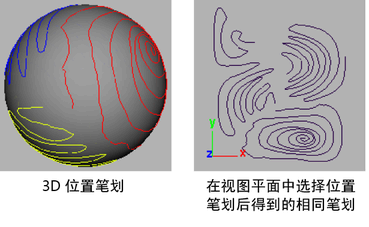
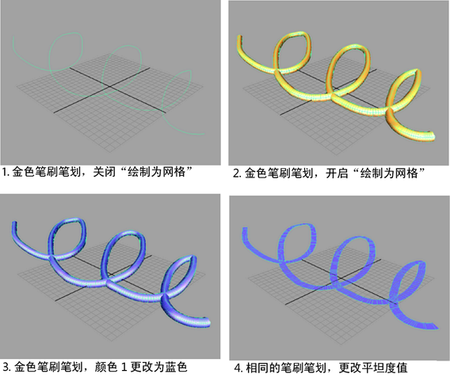
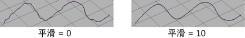
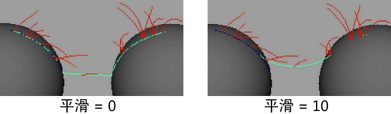
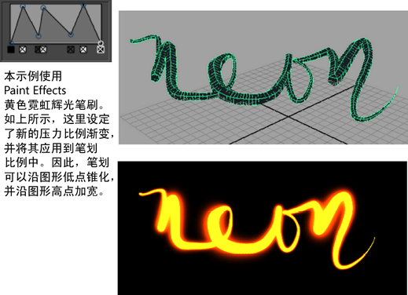

以下是使用“Paint Effects”时在 strokeShape 节点中设定的属性。
相关主题
-
在 3D 中以不同的方式绘制
- 笔划(stroke)
-
包含 strokeShape 节点的默认名称。
位置笔划(Position Stroke)
该选项仅对在对象上绘制的笔划有用，而对在透视视图的视图平面或栅格平面上绘制的笔划没有效果。可以使用该选项从 3D 对象上绘制的笔划创建纹理（有关详细信息，请参见从绘制的 3D 对象创建纹理）。选择下列选项之一：
- 3D
-
显示曲面上的笔划，就像绘制的一样。
- 在视图平面上(on View Plane)
-
显示 XY 平面上世界空间中在 0 和 1 之间的笔划（原点附近）。将该空间视为纹理贴图，纹理上的每个点与可绘制曲面上的某个点相对应，或者映射到可绘制曲面上的某个点。曲面上的所有笔划都是在该区域中绘制的。但是，执行后期处理渲染时，笔划会在视图平面上进行渲染。

- 显示质量(Display Quality)
-
使用该选项可为选定笔划设定线框的显示质量。百分比越大，笔划线框就能更接近地代表渲染的笔划。有关详细信息，请参见修改笔划显示质量。
- 绘制为网格(Draw As Mesh)
-
使用“绘制为网格”(Draw As Mesh)选项，可以在场景视图中以交互方式预览笔划的渲染外观；而不需要在“Paint Effects”面板中查看该外观。如果启用“绘制为网格”(Draw As Mesh)，则可以在场景中看到“Paint Effects”笔划，这些笔划与它们渲染时的样子非常接近。可以到处翻滚并从任何摄影机视图查看这些笔划的外观，且可以在场景中“Paint Effects”的上下文中的其他对象上建模。如果要在笔划对象上执行任何建模，需要将它们从“Paint Effects”转化为多边形。启用“绘制为网格”(Draw As Mesh)的其中一个最大的好处是，可以在场景视图中编辑笔刷属性并看到对笔划（“Paint Effects”形状）所进行的更改。
在场景视图中“Paint Effects”笔划的绘制比“Paint Effects”面板中的图章绘制快得多。可以通过以下三种方式将所有“Paint Effects”绘制为多边形：
- 选择“显示 > 渲染 > Paint Effects 网格显示”(Display > Rendering > Paint Effects Mesh Display)（请参见渲染选项）。
- 在 strokeShape 属性编辑器中，选择笔划并启用“绘制为网格”(Draw As Mesh)。
- 在 Paint Effects 工具选项（“生成 > Paint Effects 工具”(Generate > Paint Effects Tool) >
 ）中，选择“绘制为网格”(Draw As Mesh)。
）中，选择“绘制为网格”(Draw As Mesh)。
注释：
- 如果启用“绘制为网格”(Draw as mesh)，它可能会比线绘制慢一些，尤其是在笔刷或绘制的对象有动画的情况下进行播放期间。为了加快播放，请禁用“绘制为网格”(Draw as mesh)或降低“显示质量”(Display Quality)，这不会影响渲染输出。
- 将“绘制为网格”(Draw As Mesh)与“Paint Effects 头发”(Paint Effects Hair)一起使用不会提供更有用的信息，且实际上可能会更慢。对于“头发”(Hair)，线绘制一样好或更好。
 - 采样密度(Sample Density)
-
在绘制时，“Paint Effects”会对笔划上的点进行采样。在每个采样点处，“Paint Effects”“种植”管状体，按分段增长先前种植的管状体，并向笔划应用绘制图章。通过更改“采样密度”(Sample Density)，可以在绘制笔划后调整采样点的数量。默认密度为 1。增大密度会增加采样数。
例如，假定有两个使用相同模板笔刷设置绘制的笔划，第一个笔划绘制得非常快，因此包含的采样点很少，而第二个笔划绘制得非常慢，因此包含许多采样点。这两个笔划看起来会很不一样。可以通过增大其采样密度使第一个笔划与第二个笔划更相似。
- 种子(Seed)
-
该选项设定用于已随机化的笔刷属性（例如，管状体长度和宽度以及 HSV 值）的随机数字序列。默认情况下，绘制的每个笔划具有一个不同的种子编号，以确保具有相同属性和随机化值的笔划看起来会不同。为笔划设定不同的种子编号将向随机化的属性应用一组不同的随机数字，从而使该笔划看起来不相同。若要使其他相同的笔划看起来相同，请使用相同的种子编号。
- 绘制顺序(Draw Order)
-
设定笔划在场景中绘制的顺序。可能需要更改绘制顺序以使不同类型的笔划分层（例如，可以先绘制不透明笔划，然后绘制透明笔划）。编号较小的笔划首先绘制，接下来绘制编号较大的笔划。默认情况下，所有笔划的绘制顺序都为 0。
- 曲面偏移(Surface Offset)
-
设定要将笔划从对象或绘制它的平面偏移的距离（以世界单位表示）。有关详细信息，请参见 Paint Effects 工具选项中的“曲面偏移”(Surface Offset)。
- 平滑(Smoothing)
-
笔划的路径是由基本笔划路径曲线（它由 CV 组成）定义的。就像使用“铅笔曲线工具”(Pencil Curve Tool)一样，绘制笔划可能会创建不相关的 CV。使用该选项可通过重新计算整个 CV 中最平滑的路径，减弱伪造 CV 或位置错误的 CV 对笔划路径曲线产生的影响。
指定要计算的平滑量。“平滑度”(Smoothness)设置为 0 会导致没有任何平滑。
还可以使用平滑来软化多个曲面之间的过渡。
注： 虽然平滑不会改变 CV 数量，但还可以通过移除 CV 来平滑笔划。有关信息请参见简化笔划路径曲线。 - 运动模糊(Motion Blurred)
-
渲染动画时，运动模糊可通过在场景中模糊对象来达到速度和移动的效果。如果启用“运动模糊”(Motion Blurred)，笔划看起来将是模糊的。如果禁用“运动模糊”(Motion Blurred)，笔划看起来将是清晰的。还必须在“渲染设置”(Render Settings)窗口的“运动模糊”(Motion Blur)区域中启用“运动模糊(Motion Blur)”。有关详细信息，请参见渲染设置(Render Settings)：Maya 软件(Maya Software)选项卡的运动模糊(Motion Blur)部分。
- 主可见性(Primary Visibility)
-
如果启用“主可见性”(Primary Visibility)，则笔划在视图中可见，并会进行渲染。如果禁用，则笔划在视图中可见，但不会进行渲染。如果禁用“主可见性”(Primary Visibility)，且启用“投射阴影”(Cast Shadows)（请参见阴影效果笔刷设置中的“投射阴影”(Cast Shadows)），则笔划的阴影将会渲染。
结束边界(End Bounds)
以下是“结束边界”(End Bounds)区域中的笔划形状属性。
- 最小片段(Min Clip)
-
指定沿笔划的点，该点定义笔划分段的开始处。如果“最小片段”(Min Clip)值为 0，则不会剪裁笔划的开始处。
- 最大片段(Max Clip)
-
指定沿笔划的点，该点定义笔划分段的结束处。如果“最大片段”(Max Clip)值为 1，则不会剪裁笔划的结束处。
法线方向(Normal Direction)
以下是“法线方向”(Normal Direction)区域中的笔划形状属性。
- 使用法线(Use Normal)
-
启用“使用法线”(Use Normal)可使用在该选项下面设定的坐标所定义的法线。如果禁用“使用法线”(Use Normal)，则在对象上绘制的笔划会使用曲面法线，未在对象上绘制的笔划会使用笔划路径曲线法线。
- 法线(Normal)
-
指定法线的方向。仅当启用“使用法线”(Use Normal)时才会使用该法线。
压力映射(Pressure Mappings)
以下是“压力映射”(Pressure Mappings)区域中的笔划形状属性。
- 压力比例(Pressure Scale)
-
使用该图表可编辑沿笔划的线宽度（以及其他压力控制的属性）。这非常适合锥化笔划以及获取“绘图”外观。
 - 压力贴图 1 (Pressure Map 1)、2 和 3
-
选择要映射到压力的值。不需要将所有三个笔刷属性都映射到光笔压力。为无压力敏感度选择“禁用”(Off)。
- 最小压力 1 (Pressure Min 1) 、最小压力 2 (Pressure Min 2) 和最小压力 3 (Pressure Min 3)
-
设定最小压力，压力映射将在该压力下开始生效。可以绘制的最小属性值是通过将“最大压力”(Pressure Max)与为已贴图属性设定的值相乘来确定的。例如，如果将“管长度”(Tube Length)映射到压力，并且笔划的管状体长度为 3，“最大压力”(Pressure Max)为 0.5，那么无论按光笔按得有多轻，管状体长度绝不会小于 3 x 0.5 或 1.5。使用尽可能最小的压力可增大映射的范围。
- 最大压力 1 (Pressure Max 1)、2 和 3
-
设定最大压力，压力映射将在该压力下生效。可以绘制的最大属性值是通过将“最大压力”(Pressure Max)与为已贴图属性设定的值相乘来确定的。例如，如果将“管长度”(Tube Length)映射到压力，并且笔划的管状体长度为 3，“最大压力”(Pressure Max)为 2，那么当尽可能用力地按时，管状体长度将为 3 x 2 或 6。
输入曲线(Input Curves)
以下是“输入曲线”(Input Curves)区域中的笔划形状属性。
- 路径曲线(Path Curve)
-
这包含一个要用作笔划路径的曲线数组，以及沿每条曲线采样的许多点。曲线是按它们在该列表中出现的顺序进行采样的，从而生成一组为“Paint Effects”笔划定义多边形线路径的输出点和法线。默认情况下，结果点将与绘制笔划时采样的点列表相对应。如果笔划穿过多个曲面，那么每次在曲面边界上绘制时将创建一条单独的曲线。
网格输出(Mesh Output)
以下是“网格输出”(Mesh Output)区域中的笔划形状属性。
- 逐顶点颜色(Color Per Vertex)
-
使用该选项可控制逐顶点颜色。默认值为“无”(None)。下拉列表中的其他选项包括“颜色”(Color)和“照明”(Illuminated)。
- 硬边(Hard Edges)
-
如果启用该选项，则在使用“笔刷类型”(Brush Type)时会影响对象的照明并使管状体周围的边变硬。
- 输出四边形(Output Quads)
-
输出到四边形或三角形。默认设置为禁用，默认输出到三角形。
- 多边形限制(Poly Limit)
-
该值指示将“Paint Effects”笔划转化为多边形时，它应该在大约达到该数量的面后停止。这可以用于避免创建过大的网格，这些网格可能会导致内存不足。默认值为 100,000。值为 0 指示没有任何限制。
- 摄影机点(Camera Point)
-
如果启用“正向扭曲”(Forward Twist)，那么将“Paint Effects”转化为多边形时，会将透视摄影机连接到该属性，以便视图改变时可以保持多边形上的扭曲。
网格顶点细节(Mesh Vertex Details)
以下是“网格输出”(Mesh Output)区域的“网格顶点细节”(Mesh Vertex Details)子区域中的笔划形状属性。
- 主顶点缓冲区(Main Vertex Buffer)、叶顶点缓冲区(Leaf Vertex Buffer)、花顶点缓冲区(Flower Vertex Buffer)
-
这些属性记录上次对多边形网格求值时创建了多少个顶点。它们用于预分配正确的内存量。
NURBS 输出(NURBS Output)
以下是“NURBS 输出”(NURBS Output)区域中的属性。
- 次数(Degree)
-
最终生成的输出曲线的次数。
- 曲线对齐(Curve Align)
-
这支持在分支相遇的位置跨输出曲线的切线连续性。